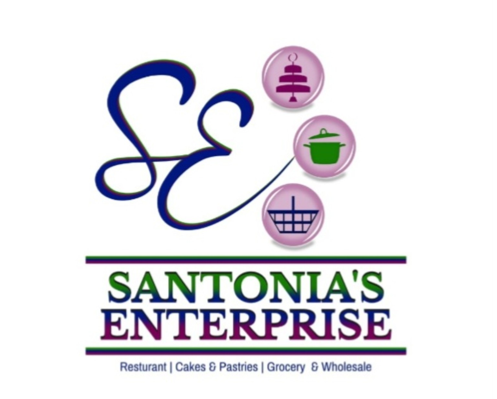
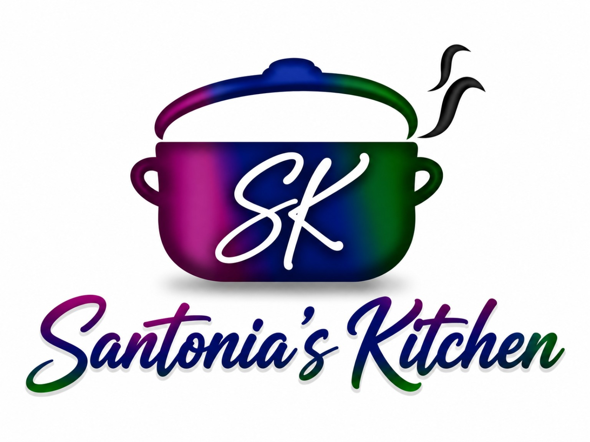

Breakfast
Bake & saltfish, rotis, pancakes, waffles, eggs, bacon and more.

QUALITY • VARIETY • SERVICE
Authentic Bajan food, catering, bakery treats, gourmet drinks, retail products, grocery and wholesale.

A Subsidiary of SanTonia's Enterprise • Good Food • Great Vibes • Always A Treat
Bake & saltfish, rotis, pancakes, waffles, eggs, bacon and more.
Home-style Bajan meals, rice & peas, macaroni pie, soups and vegetable dishes.
Wings, chicken, fish, tenders, burgers, hot dogs, wraps and fries.
Cinnamon rolls, cakes, pies, cheesecakes, brownies and cookies.
Gourmet lemonades, iced coffee, hot drinks, smoothies and flavour syrups.
Custom cakes, dessert trays, party trays and Sunday pre-orders.
Our wider retail, grocery and wholesale range.
Chicken, lamb, ham and more.
Selected beverages and other products as the range expands.
Everyday grocery products for home and family.
Ingredients and supplies for home baking.
Useful household products as the range expands.
Corporate events • Staff meetings • Birthdays • Small & large events • Group packages
Ask About CateringSanTonia's Enterprise is the original business. SanTonia's Kitchen & Catering Services grew from it as the dedicated food-service and catering subsidiary. Established in 2015, the business continues to grow with a passion for serving authentic Bajan food while expanding into retail, grocery and wholesale.
Tuesday–Saturday
7:00 AM–4:00 PM
Lot 7 Belmont Road
St. Michael, Barbados
246-260-2966